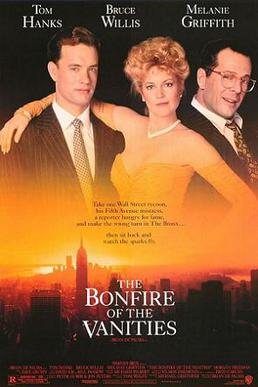

Brian De Palma
1990
125 minutes
This is the film you always get confused with Ruthless People, the one with Danny DeVito is a divorce lawyer for a split-up between Bette Midler and Judge Reinhold, and either Bill Paxton or Bill Pullman or maybe both co-star. That film as you remember it is a dark comedy about a couple going through an extremely bitter divorce, in which both of them misbehave so viciously that they intentionally destroy a good amount of their own wealth and property to make sure the other person can't get it. You frequently namecheck such situations as a Bonfire of the Vanities situation whenever a couple is having a terrible breakup and both parties end up acting very self-destructively. Such situations would be better described as a Ruthless People situation. You got in the middle of one of these situations recently, when...
Wait. That's not right.
The film you're thinking of with Danny DeVito as a divorce lawyer is actually The War of the Roses, and that one has Michael Douglas and Kathleen Turner as the couple who hate each other. You knew that didn't sound right. So the situation you were part of a few summers ago was between two friends of yours who were splitting up very dramatically and that could better be described as a War of the Roses situation.
So then what the fuck was Ruthless People? You remember there was a Mick Jagger song about it or something that got parodied by Weird Al.
You hop on Wikipedia to sort all this out before letting the film continue. So Ruthless People has Danny DeVito and Bette Midler married, which sounds more accurate, and they hate each other and he's planning to kill her for her money or something and Judge Reinhold and Helen Slater kidnap and ransom Bette Midler before he can get around to it and O. Henry hijinks ensue.
Okay, so then what the fuck is Bonfire of the Vanities? I mean, you kinda know the Savonarola reference but you can't remember the plot of this movie to save your life...
Some more Wikipedia investigation reveals that Bonfire of the Vanities is a Brian De Palma movie that has nothing to do with Danny DeVito but has an evil Tom Hanks playing a despicable yuppie who is still slightly more sympathetic than his even more despicable gold-digging mistress played by Melanie Griffith. His mistress gets in a car accident while they're on a night out with him cheating on his wife, Kim Cattrall. Bruce Willis plays Tom Hanks' lawyer, Danny DeVito, who gets him out of the sordid situation. Everyone is awful and it's kind of wickedly funny.
You're still going to get these three movies mixed up for a long time, so don't get too comfortable.
Time to choose something different: